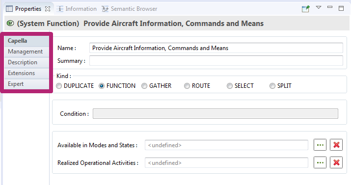

Expert and Semantic tab must be used with extreme caution as it can break your models and diagrams
The Properties view allow to retrieve and modify the attributes of the current selected element (model element or diagram).
It provides different tabs in order to access to all the attributes of the selected element:
|
|
Expert and Semantic tab must be used with extreme caution as it can break your models and diagrams |
